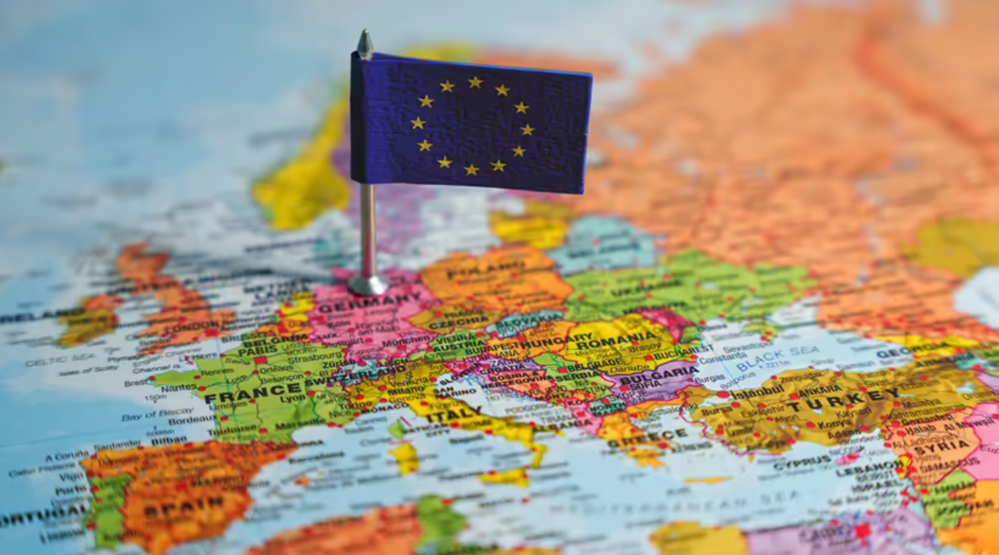
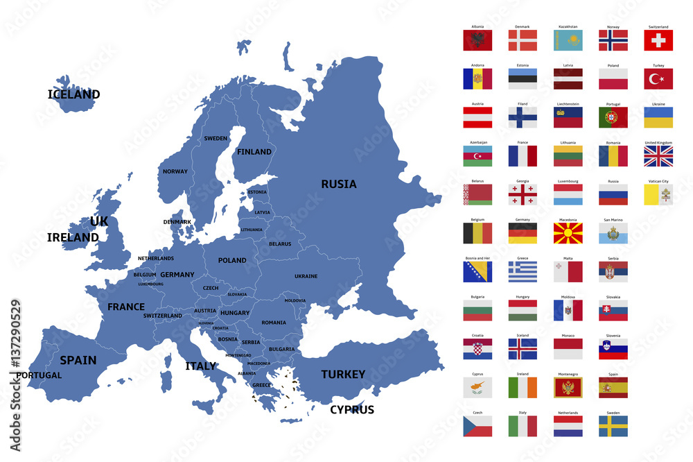

Экскурсия по Европе
Образовательный проект, создающий целостный маршрут по ключевым городам Европы.
Прага

Подпись: Европа на карте.

Подпись: Страны Европы.
Страница посещена 0 раз
О проекте и источники
Автор: Кузнецова Софья Александровна ученица, Класс: 9«а», школа.
Руководитель: Рябцева Юлия Ариевна.
Краткая цель: Создать познавательный и визуально привлекательный экскурсионный маршрут по Праге, который поможет школьникам познакомиться с культурно-историческим наследием Европы и вызвать положительное отношение к европейской культуре.
Источники и литература
Praha.eu
CzechTourism.com
Hrad.cz
Karlstejn.cz
Wikipedia
Google Maps